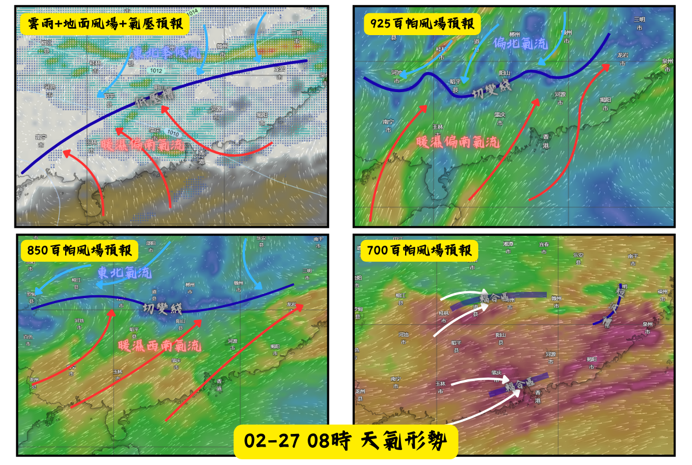
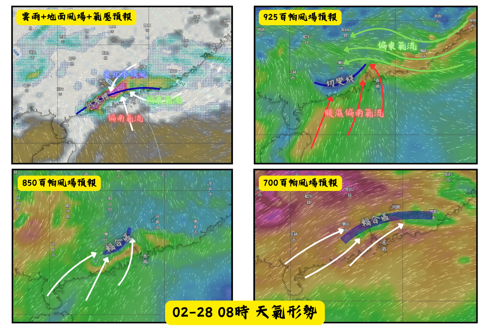

【華南地區強降水天氣（02-27 至 02-28）天氣概況分析】
發佈時間：2026年02月25日20時30分
天氣系統整體趨勢
預料一道地面低壓槽與低空切變綫會在明日在華中地區形成，隨後逐漸南壓至華南北部一帶。
02-27天氣概況分析
地面低壓槽位於華南內陸，東北季候風與暖濕偏南氣流在此對峙匯合。
925 百帕層面：偏北氣流與暖濕偏南氣流匯合的切變線，位置與地面低壓槽基本重合，為低空輻合上升提供了動力基礎。
850 百帕層面：暖濕西南氣流與東北氣流匯合的切變線同樣位於華南內陸，與 925 百帕切變線近乎垂直疊置。珠三角一帶低空處於暖濕氣流控制中，水汽條件充足。
700 百帕層面：珠三角與華南內陸一帶存在輻合區，與華南內陸的低層切變線形成高低空耦合，有利於降水發展。珠三角地區雖未直接受切變線影響，但在暖濕氣流控場下，配合中低空輻合條件，仍具備出現降水的潛力。
因此預料受低空切變綫與地面低壓槽影響，廣東中北部會有降水天氣，而珠三角會受低空暖濕氣流及中層輻合區共同影響，亦會有降水天氣。預料低空切變綫與地面低壓槽會在2月27日稍後逐漸南壓至珠三角地區一帶。

02-28天氣概況分析
地面低壓槽位於珠三角地區一帶，東北季候風，偏東氣流與偏南氣流會在珠三角地區匯合。
925百帕層面：暖濕偏南氣流與偏東氣流匯合的切變綫會位處於珠三角一帶。
850-700百帕層面：珠三角存在輻合區。
因此預料受地面低壓槽，低空切變綫與中低空輻合區共同影響下，在2月28日，廣東沿岸將會有強降水，亦會有強對流天氣出現。

後期天氣趨勢
另一輪大範圍降水天氣會在本周後期影響華中及華東地區，隨後在下周初期南壓至華南地區。但預報時間較長，預報仍存在一定變數。